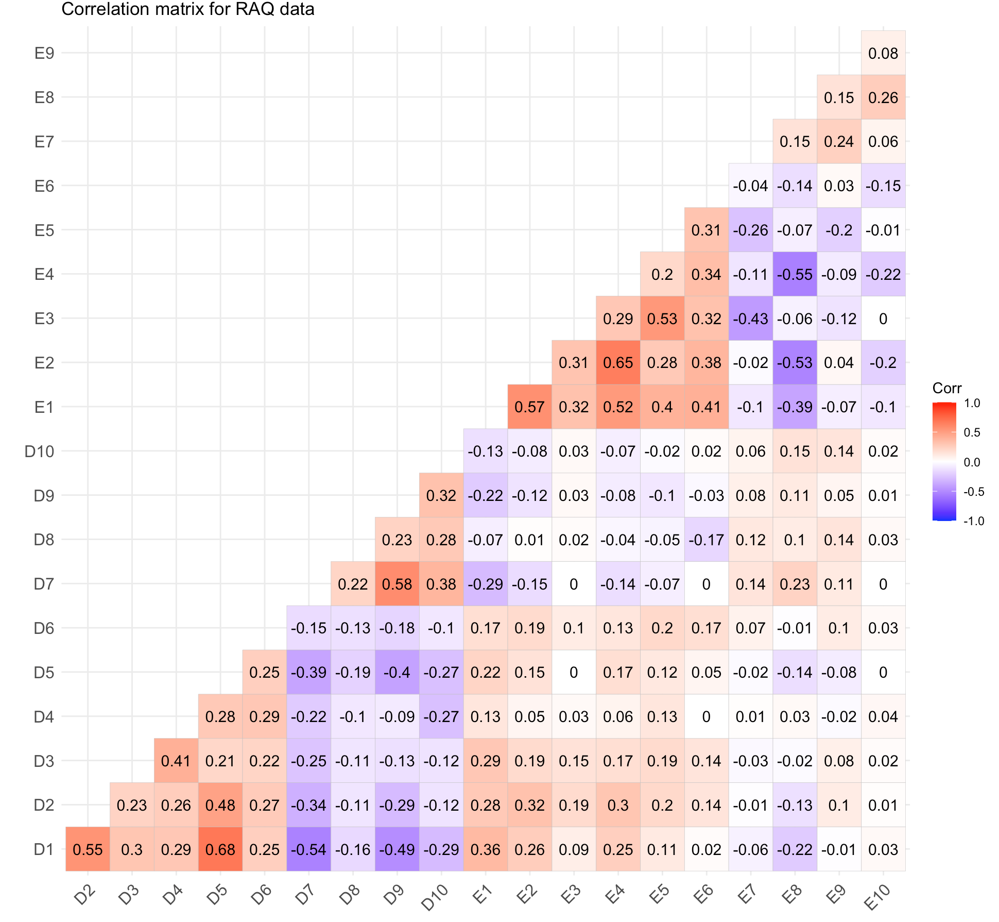

It's a hypothetical model of the relationship between two variables.Here the model is linear
The two variables involved in this are called the Predictor(independent) and the response(dependent)
variable.
It is used to assert the relationship between the variables, it could be strong/weak and positive/negative correlation.So we can describe the relationship with a straight line
This test involves ANOVA and T-test, they are used to show the effect among different groups in the variable.
Fit of the model: We use fitness of a model to show how good a model is in associating the variables.
R 2:
The R2 is the proportion of variance in the outcome (response) variable
which can be explained by the predictor (independent) variables. This gives the
usefulness of the model.
An R2 of 1 means the independent variable explains 100% of the variance in the
dependent variable. Conversely 0 means it explains none.
It shows whether the regression model is better at predicting the response variable than using the mean.
It gives the unit change of the response value with respect to the predictor value.
Standardized Beta Values:Gives the value in terms of standard deviation.Useful
in case of comparing models.
Coefficients gives the values to construct the linear equation(i.e. The intecept and the regression coefficent)
Standardized Coefficients:These are used to find the standardised scores of the coefficients, which can be used to compare different models.
The relationship is described using a variation of the equation of a straight line.
Categorical variables are hard to predict because they do not have any scale and it would be impossible to associate
the change of it like a continous variable.
So we transform the categorical variable into a series of dummy variables which indicate whether a particular case
has that particular characteristic. They are also called as indicator variables.
#Model1
scatter <- ggplot(s_perform, aes(s_perform$mG2, s_perform$mG3))
#Add a regression line
scatter + geom_point() + geom_smooth(method = "lm", colour = "Red", se = F) + labs(x = "mG2", y = "mG3")
#Pearson Correlation
stats::cor.test(s_perform$mG2, s_perform$mG3, method='pearson')
#Building linear model using mG1,mG2 as predictors and mG3 as the dependent variable
s_perform$mG3<-na_if(s_perform$mG3,0)
model1<-lm(s_perform$mG3~s_perform$mG2)
anova(model1)
summary(model1)
lm.beta::lm.beta(model1)
stargazer(model1, type="text") #Tidy output of all the required stats
> anova(model1)
Analysis of Variance Table
Response: s_perform$mG3
Df Sum Sq Mean Sq F value Pr(>F)
s_perform$mG2 1 3444.5 3444.5 4902.1 < 2.2e-16 ***
Residuals 341 239.6 0.7
---
Signif. codes: 0 ‘***’ 0.001 ‘**’ 0.01 ‘*’ 0.05 ‘.’ 0.1 ‘ ’ 1
> summary(model1)
Call:
lm(formula = s_perform$mG3 ~ s_perform$mG2)
Residuals:
Min 1Q Median 3Q Max
-2.2447 -0.2199 -0.1579 0.7925 2.7801
Coefficients:
Estimate Std. Error t value Pr(>|t|)
(Intercept) 0.31921 0.16692 1.912 0.0567 .
s_perform$mG2 0.98759 0.01411 70.015 < 2e-16 ***
---
Signif. codes: 0 ‘***’ 0.001 ‘**’ 0.01 ‘*’ 0.05 ‘.’ 0.1 ‘ ’ 1
Residual standard error: 0.8382 on 341 degrees of freedom
(39 observations deleted due to missingness)
Multiple R-squared: 0.935, Adjusted R-squared: 0.9348
F-statistic: 4902 on 1 and 341 DF, p-value: < 2.2e-16
> lm.beta::lm.beta(model1)
Call:
lm(formula = s_perform$mG3 ~ s_perform$mG2)
Standardized Coefficients::
(Intercept) s_perform$mG2
0.0000000 0.9669345
> stargazer(model1, type="text") #Tidy output of all the required stats
===============================================
Dependent variable:
---------------------------
mG3
-----------------------------------------------
mG2 0.988***
(0.014)
Constant 0.319*
(0.167)
-----------------------------------------------
Observations 343
R2 0.935
Adjusted R2 0.935
Residual Std. Error 0.838 (df = 341)
F Statistic 4,902.121*** (df = 1; 341)
===============================================
Note: *p< 0.1; **p< 0.05; ***p< 0.01
- Outliers:
cooksd<-sort(cooks.distance(model1))
# plot Cook's distance
plot(cooksd, pch="*", cex=2, main="Influential Obs by Cooks distance")
abline(h = 4*mean(cooksd, na.rm=T), col="red") # add cutoff line
text(x=1:length(cooksd)+1, y=cooksd, labels=ifelse(cooksd>4*mean(cooksd, na.rm=T),names(cooksd),""), col="red") # add labels
#finding rows related to influential observations
influential <- as.numeric(names(cooksd)[(cooksd > 4*mean(cooksd, na.rm=T))]) # influential row numbers
influential
stem(influential)
head(s_perform[influential, ]) # influential observations.
head(s_perform[influential, ]$mG1) # influential observations - look at the values of mG1
head(s_perform[influential, ]$mG3) # influential observations - look at the values of mG3
car::outlierTest(model1) # Bonferonni p-value for most extreme obs - Are there any cases where the outcome variable has an unusual variable for its predictor values?
- Leverage:
car::leveragePlots(model1) # leverage plots
- Homocedasticity:
#Assess homocedasticity
plot(model1,1)
plot(model1, 3)
- Residuals:
#Create histogram and density plot of the residuals
plot(density(resid(model1)))
#Create a QQ plotqqPlot(model, main="QQ Plot") #qq plot for studentized resid
car::qqPlot(model1, main="QQ Plot") #qq plot for studentized resid
> influential
[1] 246 56 2 35 145 287 288 351 170 105 34 216 334 252 48 185 129
> stem(influential)
The decimal point is 2 digit(s) to the right of the |
0 | 03456
1 | 13579
2 | 25599
3 | 35
> head(s_perform[influential, ]) # influential observations.
# A tibble: 6 x 57
school sex age address famsize Pstatus Medu Fedu Mjob Fjob reason nursery internet guardian.m traveltime.m
1 GP M 16 U GT3 T 4 3 heal… serv… reput… yes yes mother 1
2 GP F 16 U GT3 T 2 2 serv… other reput… no yes mother 2
3 GP F 15 R GT3 T 1 1 other other reput… no yes mother 1
4 GP F 15 U LE3 T 1 1 at_h… other other yes yes mother 1
5 GP F 18 R GT3 T 1 1 at_h… other course no no mother 3
6 GP M 17 U GT3 T 2 1 other other home yes yes mother 2
# … with 42 more variables: studytime.m , failures.m , schoolsup.m , famsup.m , paid.m ,
# activities.m , higher.m , romantic.m , famrel.m , freetime.m , goout.m , Dalc.m ,
# Walc.m , health.m , absences.m , mG1 , mG2 , mG3 , guardian.p , traveltime.p ,
# studytime.p , failures.p , schoolsup.p , famsup.p , paid.p , activities.p ,
# higher.p , romantic.p , famrel.p , freetime.p , goout.p , Dalc.p , Walc.p ,
# health.p , absences.p , pG1 , pG2 , pG3 , intmark , Sex_num , inthighmG2 ,
# inthigher.m
> head(s_perform[influential, ]$mG1) # influential observations - look at the values of mG1
[1] 19 13 8 7 9 8
> head(s_perform[influential, ]$mG3) # influential observations - look at the values of mG3
[1] 20 11 5 10 10 10
> car::outlierTest(model1) # Bonferonni p-value for most extreme obs - Are there any cases where the outcome variable has an unusual variable for its predictor values?
No Studentized residuals with Bonferroni p < 0.05
Largest |rstudent|:
rstudent unadjusted p-value Bonferroni p
48 3.377184 0.00081718 0.28029
> car::qqPlot(model1, main="QQ Plot") #qq plot for studentized resid
[1] 48 185
It can be observed that all the points are less than 1, So we don't have to worry about the outliers
We can see that there is no pattern and points are equally distributed, therefore homoscedasticity is not an concern
Minimum and Maximum value is within the acceptable range(-3.29,+3.29) hence we do not have outliers.
Though the red lines are slightly distorted but this is not a huge problem
Errors are normally distributed
Errors are normally distributed
#Model2
model2<-lm(s_perform$mG3~s_perform$mG2+s_perform$higher.m)
anova(model2)
summary(model2)
stargazer(model2, type="text") #Tidy output of all the required stats
lm.beta(model2)
stargazer(model1, model2, type="text")
> anova(model2)
Analysis of Variance Table
Response: s_perform$mG3
Df Sum Sq Mean Sq F value Pr(>F)
s_perform$mG2 1 3444.5 3444.5 4893.2132 < 2e-16 ***
s_perform$higher.m 1 0.3 0.3 0.3804 0.5378
Residuals 340 239.3 0.7
---
Signif. codes: 0 ‘***’ 0.001 ‘**’ 0.01 ‘*’ 0.05 ‘.’ 0.1 ‘ ’ 1
> summary(model2)
Call:
lm(formula = s_perform$mG3 ~ s_perform$mG2 + s_perform$higher.m)
Residuals:
Min 1Q Median 3Q Max
-2.2322 -0.2101 -0.1549 0.8009 2.7899
Coefficients:
Estimate Std. Error t value Pr(>|t|)
(Intercept) 0.45893 0.28148 1.630 0.104
s_perform$mG2 0.98897 0.01429 69.189 < 2e-16 ***
s_perform$higher.myes -0.16055 0.26033 -0.617 0.538
---
Signif. codes: 0 ‘***’ 0.001 ‘**’ 0.01 ‘*’ 0.05 ‘.’ 0.1 ‘ ’ 1
Residual standard error: 0.839 on 340 degrees of freedom
(39 observations deleted due to missingness)
Multiple R-squared: 0.935, Adjusted R-squared: 0.9347
F-statistic: 2447 on 2 and 340 DF, p-value: < 2.2e-16
> stargazer(model2, type="text") #Tidy output of all the required stats
===============================================
Dependent variable:
---------------------------
mG3
-----------------------------------------------
mG2 0.989***
(0.014)
higher.myes -0.161
(0.260)
Constant 0.459
(0.281)
-----------------------------------------------
Observations 343
R2 0.935
Adjusted R2 0.935
Residual Std. Error 0.839 (df = 340)
F Statistic 2,446.797*** (df = 2; 340)
===============================================
Note: *p< 0.1; **p< 0.05; ***p< 0.01
> lm.beta(model2)
Call:
lm(formula = s_perform$mG3 ~ s_perform$mG2 + s_perform$higher.m)
Standardized Coefficients::
(Intercept) s_perform$mG2 s_perform$higher.myes
0.00000000 0.96828309 -0.00863115
> stargazer(model1, model2, type="text")
=========================================================================
Dependent variable:
-----------------------------------------------------
mG3
(1) (2)
-------------------------------------------------------------------------
mG2 0.988*** 0.989***
(0.014) (0.014)
higher.myes -0.161
(0.260)
Constant 0.319* 0.459
(0.167) (0.281)
-------------------------------------------------------------------------
Observations 343 343
R2 0.935 0.935
Adjusted R2 0.935 0.935
Residual Std. Error 0.838 (df = 341) 0.839 (df = 340)
F Statistic 4,902.121*** (df = 1; 341) 2,446.797*** (df = 2; 340)
=========================================================================
Note: *p< 0.1; **p< 0.05; ***p< 0.01
- Outliers:
#Influential Outliers - Cook's distance
cooksd<-sort(cooks.distance(model2))
# plot Cook's distance
plot(cooksd, pch="*", cex=2, main="Influential Obs by Cooks distance")
abline(h = 4*mean(cooksd, na.rm=T), col="red") # add cutoff line
text(x=1:length(cooksd)+1, y=cooksd, labels=ifelse(cooksd>4*mean(cooksd, na.rm=T),names(cooksd),""), col="red") # add labels
#find rows related to influential observations
influential <- as.numeric(names(cooksd)[(cooksd > 4*mean(cooksd, na.rm=T))]) # influential row numbers
stem(influential)
head(s_perform[influential, ]) # influential observations.
head(s_perform[influential, ]$mG2) # influential observations - look at the values of mG2
head(s_perform[influential, ]$mG3) # influential observations - look at the values of mG3
head(s_perform[influential, ]$higher.m) # influential observations -look at the values of higher
car::outlierTest(model2) # Bonferonni p-value for most extreme obs - Are there any cases where the outcome variable has an unusual variable for its predictor values?
- Leverage:
car::leveragePlots(model2) # leverage plots
- Homocedasticity:
#Assess homocedasticity
plot(model2,1)
plot(model2, 3)
- Residuals:
#Create histogram and density plot of the residuals
plot(density(resid(model2)))
#Create a QQ plotqqPlot(model, main="QQ Plot") #qq plot for studentized resid
car::qqPlot(model2, main="QQ Plot") #qq plot for studentized resid
- Collinearity:
#Collinearity
vifmodel<-car::vif(model2)
vifmodel
#Tolerance
1/vifmodel
> head(s_perform[influential, ]) # influential observations.
# A tibble: 6 x 57
school sex age address famsize Pstatus Medu Fedu Mjob Fjob reason nursery internet guardian.m traveltime.m
1 GP M 15 U LE3 T 4 3 teac… serv… home yes yes mother 1
2 GP F 15 U LE3 A 4 3 other other course yes yes mother 1
3 GP M 18 U LE3 T 3 3 serv… heal… home yes yes father 1
4 MS M 18 U LE3 T 1 3 at_h… serv… course yes yes mother 1
5 GP F 19 U GT3 T 0 1 at_h… other course no no other 1
6 GP M 16 U GT3 T 4 4 serv… serv… other yes yes mother 1
# … with 42 more variables: studytime.m , failures.m , schoolsup.m , famsup.m , paid.m ,
# activities.m , higher.m , romantic.m , famrel.m , freetime.m , goout.m , Dalc.m ,
# Walc.m , health.m , absences.m , mG1 , mG2 , mG3 , guardian.p , traveltime.p ,
# studytime.p , failures.p , schoolsup.p , famsup.p , paid.p , activities.p ,
# higher.p , romantic.p , famrel.p , freetime.p , goout.p , Dalc.p , Walc.p ,
# health.p , absences.p , pG1 , pG2 , pG3 , intmark , Sex_num , inthighmG2 ,
# inthigher.m
> head(s_perform[influential, ]$mG2) # influential observations - look at the values of mG2
[1] 16 8 6 7 8 7
> head(s_perform[influential, ]$mG3) # influential observations - look at the values of mG3
[1] 18 6 8 8 9 5
> head(s_perform[influential, ]$higher.m) # influential observations -look at the values of higher
[1] "yes" "yes" "yes" "no" "no" "yes"
> car::outlierTest(model2) # Bonferonni p-value for most extreme obs - Are there any cases where the outcome variable has an unusual variable for its predictor values?
No Studentized residuals with Bonferroni p < 0.05
Largest |rstudent|:
rstudent unadjusted p-value Bonferroni p
48 3.387117 0.00078934 0.27075
> car::leveragePlots(model2) # leverage plots
> #A density plot of the residuals
> plot(density(resid(model2)))
> #Create a QQ plot qPlot(model, main="QQ Plot") #qq plot for studentized resid
> car::qqPlot(model2, main="QQ Plot Model 2") #qq plot for studentized resid
[1] 48 185
> #Collinearity
> vifmodel<-car::vif(model2)
> vifmodel
s_perform$mG2 s_perform$higher.m
1.025022 1.025022
#Tolerance
> 1/vifmodel
s_perform$mG2 s_perform$higher.m
0.9755884 0.9755884
It can be observed that all the points are less than 1, So we don't have to worry about the outliers
We can see that there is no pattern and points are equally distributed, therefore homoscedasticity is not an concern
Minimum and Maximum value is within the acceptable range(-3.29,+3.29) hence we do not have outliers.
Though the red lines are slightly distorted but this is not a huge problem
Errors are normally distributed
Errors are normally distributed
Multiple regression analysis was conducted to determine the student's final math grade(mG3).. Marks obtained in second grade(mG2),going for higher studies(higher) were used as predictor variables. In order to include the higher education in the regression model it was recorded dummy variable higher_edu (0 for no, 1 for yes).Examination of the histogram, normal P-P plot of standardised residuals and the scatterplot of the dependent variable, academic satisfaction, and standardised residuals showed that the some outliers existed. However, examination of the standardised residuals showed that none could be considered to have undue influence (95% within limits of -1.96 to plus 1.96 and none with Cook’s distance >1 as outlined in Field (2013). Examination for multicollinearity showed that the tolerance and variance influence factor measures were within acceptable levels (tolerance >0.4, VIF < 2.5 ) as outlined in Tarling (2008). The scatterplot of standardised residuals showed that the data met the assumptions of homogeneity of variance and linearity. The data also meets the assumption of non-zero variances of the predictors.
#Model 3
#interaction effect
#create interaction term - adding a new variable to the dataset inthighmG2
s_perform$inthigher.m <- ifelse(s_perform$higher.m=='yes',1,0)
s_perform$inthigher.m
s_perform$inthighmG2<-as.numeric(s_perform$inthigher.m)*s_perform$mG2
s_perform$inthighmG2
model3 <-lm(s_perform$mG3~s_perform$mG2+s_perform$higher.m+s_perform$inthighmG2)
anova(model3)
summary(model3)
stargazer(model3, type="text") #Tidy output of all the required stats
lm.beta(model3)
stargazer(model2, model3, type="text")
> anova(model3)
Analysis of Variance Table
Response: s_perform$mG3
Df Sum Sq Mean Sq F value Pr(>F)
s_perform$mG2 1 3444.5 3444.5 4899.7341 < 2e-16 ***
s_perform$higher.m 1 0.3 0.3 0.3809 0.5375
s_perform$inthighmG2 1 1.0 1.0 1.4531 0.2289
Residuals 339 238.3 0.7
---
Signif. codes: 0 ‘***’ 0.001 ‘**’ 0.01 ‘*’ 0.05 ‘.’ 0.1 ‘ ’ 1
> summary(model3)
Call:
lm(formula = s_perform$mG3 ~ s_perform$mG2 + s_perform$higher.m +
s_perform$inthighmG2)
Residuals:
Min 1Q Median 3Q Max
-2.2252 -0.2057 -0.1569 0.8041 2.7943
Coefficients:
Estimate Std. Error t value Pr(>|t|)
(Intercept) 2.4804 1.7004 1.459 0.145565
s_perform$mG2 0.7549 0.1947 3.877 0.000127 ***
s_perform$higher.myes -2.1966 1.7089 -1.285 0.199549
s_perform$inthighmG2 0.2353 0.1952 1.205 0.228872
---
Signif. codes: 0 ‘***’ 0.001 ‘**’ 0.01 ‘*’ 0.05 ‘.’ 0.1 ‘ ’ 1
Residual standard error: 0.8385 on 339 degrees of freedom
(39 observations deleted due to missingness)
Multiple R-squared: 0.9353, Adjusted R-squared: 0.9347
F-statistic: 1634 on 3 and 339 DF, p-value: < 2.2e-16
> stargazer(model3, type="text") #Tidy output of all the required stats
===============================================
Dependent variable:
---------------------------
mG3
-----------------------------------------------
mG2 0.755***
(0.195)
higher.myes -2.197
(1.709)
inthighmG2 0.235
(0.195)
Constant 2.480
(1.700)
-----------------------------------------------
Observations 343
R2 0.935
Adjusted R2 0.935
Residual Std. Error 0.838 (df = 339)
F Statistic 1,633.856*** (df = 3; 339)
===============================================
Note: *p< 0.1; **p< 0.05; ***p< 0.01
> lm.beta(model3)
Call:
lm(formula = s_perform$mG3 ~ s_perform$mG2 + s_perform$higher.m +
s_perform$inthighmG2)
Standardized Coefficients::
(Intercept) s_perform$mG2 s_perform$higher.myes s_perform$inthighmG2
0.0000000 0.7391138 -0.1180848 0.2694700
> stargazer(model2, model3, type="text")
=========================================================================
Dependent variable:
-----------------------------------------------------
mG3
(1) (2)
-------------------------------------------------------------------------
mG2 0.989*** 0.755***
(0.014) (0.195)
higher.myes -0.161 -2.197
(0.260) (1.709)
inthighmG2 0.235
(0.195)
Constant 0.459 2.480
(0.281) (1.700)
-------------------------------------------------------------------------
Observations 343 343
R2 0.935 0.935
Adjusted R2 0.935 0.935
Residual Std. Error 0.839 (df = 340) 0.838 (df = 339)
F Statistic 2,446.797*** (df = 2; 340) 1,633.856*** (df = 3; 339)
=========================================================================
Note: *p< 0.1; **p< 0.05; ***p< 0.01
- Outliers:
#Influential Outliers - Cook's distance
cooksd<-sort(cooks.distance(model3))
# plot Cook's distance
plot(cooksd, pch="*", cex=2, main="Influential Obs by Cooks distance")
abline(h = 4*mean(cooksd, na.rm=T), col="red") # add cutoff line
text(x=1:length(cooksd)+1, y=cooksd, labels=ifelse(cooksd>4*mean(cooksd, na.rm=T),names(cooksd),""), col="red") # add labels
#find rows related to influential observations
influential <- as.numeric(names(cooksd)[(cooksd > 4*mean(cooksd, na.rm=T))]) # influential row numbers
stem(influential)
head(s_perform[influential, ]) # influential observations.
head(s_perform[influential, ]$mG2) # influential observations - look at the values of mG2
head(s_perform[influential, ]$mG3) # influential observations - look at the values of mG3
head(s_perform[influential, ]$higher.m) # influential observations -look at the values of higher
head(s_perform[influential, ]$inthighmG2) # influential observations -look at the values of interaction var
- Leverage:
car::leveragePlots(model3) # leverage plots
- Homocedasticity:
#Assess homocedasticity
plot(model3,1)
plot(model3, 3)
- Residuals:
#Create histogram and density plot of the residuals
plot(density(resid(model3)))
#Create a QQ plotqqPlot(model, main="QQ Plot") #qq plot for studentized resid
car::qqPlot(model1, main="QQ Plot") #qq plot for studentized resid
- Collinearity:
#Collinearity
vifmodel<-car::vif(model2)
vifmodel
#Tolerance
1/vifmodel
> head(s_perform[influential, ]) # influential observations.
# A tibble: 6 x 57
school sex age address famsize Pstatus Medu Fedu Mjob Fjob reason nursery internet guardian.m traveltime.m
1 GP F 16 U GT3 T 1 1 serv… serv… course no yes father 4
2 GP M 15 U GT3 T 2 2 serv… serv… course yes yes father 1
3 GP F 17 U GT3 T 4 3 other other reput… yes yes mother 1
4 GP M 18 U GT3 T 2 1 serv… serv… other no yes mother 1
5 GP M 17 U GT3 T 2 1 other other home yes yes mother 2
6 GP M 17 U GT3 T 2 1 other other home yes yes mother 2
# … with 42 more variables: studytime.m , failures.m , schoolsup.m , famsup.m , paid.m ,
# activities.m , higher.m , romantic.m , famrel.m , freetime.m , goout.m , Dalc.m ,
# Walc.m , health.m , absences.m , mG1 , mG2 , mG3 , guardian.p , traveltime.p ,
# studytime.p , failures.p , schoolsup.p , famsup.p , paid.p , activities.p ,
# higher.p , romantic.p , famrel.p , freetime.p , goout.p , Dalc.p , Walc.p ,
# health.p , absences.p , pG1 , pG2 , pG3 , intmark , Sex_num , inthighmG2 ,
# inthigher.m
> head(s_perform[influential, ]$mG2) # influential observations - look at the values of mG2
[1] 8 8 6 9 8 8
> head(s_perform[influential, ]$mG3) # influential observations - look at the values of mG3
[1] 11 11 4 8 10 10
> head(s_perform[influential, ]$higher.m) # influential observations -look at the values of higher
[1] "yes" "yes" "yes" "no" "no" "no"
> head(s_perform[influential, ]$inthighmG2) # influential observations -look at the values of interaction var
[1] 8 8 6 0 0 0
> car::outlierTest(model3) # Bonferonni p-value for most extreme obs - Are there any cases where the outcome variable has an unusual variable for its predictor values?
No Studentized residuals with Bonferroni p < 0.05
Largest |rstudent|:
rstudent unadjusted p-value Bonferroni p
48 3.395179 0.00076746 0.26324
> car::leveragePlots(model3) # leverage plots
> #Assess homocedasticity
> plot(model3,1)
> plot(model3, 3)
> #A density plot of the residuals
> plot(density(resid(model3)))
> #Create a QQ plot qPlot(model, main="QQ Plot") #qq plot for studentized resid
> car::qqPlot(model3, main="QQ Plot Model 3") #qq plot for studentized resid
[1] 48 185
vifmodel
s_perform$mG2 s_perform$higher.m s_perform$inthighmG2
190.43212 44.23102 261.88128
> #Tolerance
> 1/vifmodel
s_perform$mG2 s_perform$higher.m s_perform$inthighmG2
0.005251215 0.022608568 0.003818524
It can be observed that all the points are less than 1, So we don't have to worry about the outliers
We can see that there is no pattern and points are equally distributed, therefore homoscedasticity is not an concern
Minimum and Maximum value is within the acceptable range(-3.29,+3.29) hence we do not have outliers.
Though the red lines are slightly distorted but this is not a huge problem
Errors are normally distributed
Errors are normally distributed
Multiple regression analysis was conducted to determine the student's final math grade(mG3).. Marks obtained in second grade(mG2),going for higher studies(higher) were used as predictor variables In order to include the higher education in the regression model it was recorded dummy variable higher_edu (0 for no, 1 for yes) and an interaction term was introduced by multiplying (inthigher * mG2) .Examination of the histogram, normal P-P plot of standardised residuals and the scatterplot of the dependent variable, academic satisfaction, and standardised residuals showed that the some outliers existed. However, examination of the standardised residuals showed that none could be considered to have undue influence (95% within limits of -1.96 to plus 1.96 and none with Cook’s distance >1 as outlined in Field (2013). Examination for multicollinearity showed that the tolerance and variance influence factor measures were outside acceptable levels (tolerance < 0.4, VIF > 2.5 ) as outlined in Tarling (2008).
Sensitivity (also called the true positive rate, or the recall in some fields)
Sensitivity= true positives/(true positive + false negative)
It gives the percentage of the group with the characteristic of interest
that has been accurately identified by the model
Specificity (also called the true negative rate)
Specificity=true negatives/(true negative + false positives)
It gives the percentage of the group not with the characteristic of interest
that has been accurately identified by the model
ROC curve:
#Make sure categorical data is used as factors
logmodel1 <- glm(as.factor(higher.m) ~ as.factor(sex), data = s_perform, na.action = na.exclude, family = binomial(link=logit))
#Full summary of the model
summary(logmodel1)
#Chi-square plus significance
lmtest::lrtest(logmodel1)
#Output the sensitivity, specificity, and ROC plot
Epi::ROC(form=as.factor(s_perform$higher.m) ~as.factor(s_perform$sex), plot="ROC")
#Pseudo Rsquared
DescTools::PseudoR2(logmodel1, which="CoxSnell")
DescTools::PseudoR2(logmodel1, which="Nagelkerke")
#Summary of the model with co-efficients
stargazer(logmodel1, type="text")
#Exponentiate the co-efficients
exp(coefficients(logmodel1))
## odds ratios and 95% CI
cbind(Estimate=round(coef(logmodel1),4),
OR=round(exp(coef(logmodel1)),4))
#Probability of answering yes when male
arm::invlogit(coef(logmodel1)[1]+ coef(logmodel1)[2]*0)#YES this is the same as just having the 1st co-efficient
#Probability of answering yes when female
arm::invlogit(coef(logmodel1)[1]+ coef(logmodel1)[2]*1)
generalhoslem::logitgof(as.factor(s_perform$higher.m), fitted(logmodel1))
> summary(logmodel1)
Call:
glm(formula = as.factor(higher.m) ~ as.factor(sex), family = binomial(link = logit),
data = s_perform, na.action = na.exclude)
Deviance Residuals:
Min 1Q Median 3Q Max
-2.8947 0.1747 0.1747 0.4124 0.4124
Coefficients:
Estimate Std. Error z value Pr(>|z|)
(Intercept) 4.1744 0.5818 7.175 7.22e-13 ***
as.factor(sex)M -1.7525 0.6411 -2.734 0.00627 **
---
Signif. codes: 0 ‘***’ 0.001 ‘**’ 0.01 ‘*’ 0.05 ‘.’ 0.1 ‘ ’ 1
(Dispersion parameter for binomial family taken to be 1)
Null deviance: 145.12 on 381 degrees of freedom
Residual deviance: 135.04 on 380 degrees of freedom
AIC: 139.04
Number of Fisher Scoring iterations: 7
> #Chi-square plus significance
> lmtest::lrtest(logmodel1)
Likelihood ratio test
Model 1: as.factor(higher.m) ~ as.factor(sex)
Model 2: as.factor(higher.m) ~ 1
#Df LogLik Df Chisq Pr(>Chisq)
1 2 -67.521
2 1 -72.560 -1 10.079 0.0015 **
---
Signif. codes: 0 ‘***’ 0.001 ‘**’ 0.01 ‘*’ 0.05 ‘.’ 0.1 ‘ ’ 1
> #Output the sensitivity, specificity, and ROC plot
> Epi::ROC(form=as.factor(s_perform$higher.m) ~as.factor(s_perform$sex), plot="ROC")
> #Pseudo Rsquared
> DescTools::PseudoR2(logmodel1, which="CoxSnell")
CoxSnell
0.0260388
> DescTools::PseudoR2(logmodel1, which="Nagelkerke")
Nagelkerke
0.08238383
> #Summary of the model with co-efficients
> stargazer(logmodel1, type="text")
=============================================
Dependent variable:
---------------------------
as.factor(higher.m)
---------------------------------------------
as.factor(sex)M -1.753***
(0.641)
Constant 4.174***
(0.582)
---------------------------------------------
Observations 382
Log Likelihood -67.521
Akaike Inf. Crit. 139.041
=============================================
Note: *p< 0.1; **p< 0.05; ***p< 0.01
> #Exponentiate the co-efficients
> exp(coefficients(logmodel1))
(Intercept) as.factor(sex)M
65.0000000 0.1733333
> ## odds ratios and 95% CI
> cbind(Estimate=round(coef(logmodel1),4),
+ OR=round(exp(coef(logmodel1)),4))
Estimate OR
(Intercept) 4.1744 65.0000
as.factor(sex)M -1.7525 0.1733
> #Probability of answering yes when male
> arm::invlogit(coef(logmodel1)[1]+ coef(logmodel1)[2]*0)#YES this is the same as just having the 1st co-efficient
(Intercept)
0.9848485
> #Probability of answering yes when female
> arm::invlogit(coef(logmodel1)[1]+ coef(logmodel1)[2]*1)
(Intercept)
0.9184783
> generalhoslem::logitgof(as.factor(s_perform$higher.m), fitted(logmodel1))
Hosmer and Lemeshow test (binary model)
data: as.factor(s_perform$higher.m), fitted(logmodel1)
X-squared = 4.4881e-27, df = -1, p-value = NA
#Make sure categorical data is used as factors
logmodel2 <- glm(as.factor(higher.m) ~ as.factor(sex)+as.factor(romantic.m), data = s_perform, na.action = na.exclude, family = binomial(link=logit))
#Full summary of the model
summary(logmodel2)
#Chi-square plus significance
lmtest::lrtest(logmodel2)
#Pseudo Rsquared
DescTools::PseudoR2(logmodel2, which="CoxSnell")
DescTools::PseudoR2(logmodel2, which="Nagelkerke")
#Output the sensitivity, specificity, and ROC plot
Epi::ROC(form=as.factor(s_perform$higher.m) ~as.factor(s_perform$sex)+as.factor(s_perform$romantic.m), plot="ROC")
#Summary of the model with co-efficients
stargazer(logmodel2, type="text")
#Exponentiate the co-efficients
exp(coefficients(logmodel2))
## odds ratios
cbind(Estimate=round(coef(logmodel2),4),
OR=round(exp(coef(logmodel2)),4))
#romantic.m 1 has a romantic relationship, 2 not having a romantic relationship
#1. Probability of answering yes when male and having a relationship
arm::invlogit(coef(logmodel2)[1]+ coef(logmodel2)[2]*0)
#2. Probability of answering yes when female and having a relationship
arm::invlogit(coef(logmodel2)[1]+ coef(logmodel2)[2]*1)
#3.Probability of answering yes when male when not having a relationship
arm::invlogit(coef(logmodel2)[1]+ coef(logmodel2)[2]*0 +coef(logmodel2)[3]*0)
#4. Probability of answering yes when female when not having a relationship
arm::invlogit(coef(logmodel2)[1]+ coef(logmodel2)[2]*1 +coef(logmodel2)[3]*0)
> summary(logmodel2)
Call:
glm(formula = as.factor(higher.m) ~ as.factor(sex) + as.factor(romantic.m),
family = binomial(link = logit), data = s_perform, na.action = na.exclude)
Deviance Residuals:
Min 1Q Median 3Q Max
-3.1426 0.1200 0.2471 0.3070 0.6137
Coefficients:
Estimate Std. Error z value Pr(>|z|)
(Intercept) 4.9308 0.6803 7.248 4.22e-13 ***
as.factor(sex)M -1.8994 0.6489 -2.927 0.00342 **
as.factor(romantic.m)yes -1.4573 0.5077 -2.870 0.00410 **
---
Signif. codes: 0 ‘***’ 0.001 ‘**’ 0.01 ‘*’ 0.05 ‘.’ 0.1 ‘ ’ 1
(Dispersion parameter for binomial family taken to be 1)
Null deviance: 145.12 on 381 degrees of freedom
Residual deviance: 126.56 on 379 degrees of freedom
AIC: 132.56
Number of Fisher Scoring iterations: 7
>
> #Chi-square plus significance
> lmtest::lrtest(logmodel2)
Likelihood ratio test
Model 1: as.factor(higher.m) ~ as.factor(sex) + as.factor(romantic.m)
Model 2: as.factor(higher.m) ~ 1
#Df LogLik Df Chisq Pr(>Chisq)
1 3 -63.28
2 1 -72.56 -2 18.561 9.325e-05 ***
---
Signif. codes: 0 ‘***’ 0.001 ‘**’ 0.01 ‘*’ 0.05 ‘.’ 0.1 ‘ ’ 1
>
> #Pseudo Rsquared
> DescTools::PseudoR2(logmodel2, which="CoxSnell")
CoxSnell
0.04742633
> DescTools::PseudoR2(logmodel2, which="Nagelkerke")
Nagelkerke
0.1500516
>
> #Output the sensitivity, specificity, and ROC plot
> Epi::ROC(form=as.factor(s_perform$higher.m) ~as.factor(s_perform$sex)+as.factor(s_perform$romantic.m), plot="ROC")
>
> #Summary of the model with co-efficients
> stargazer(logmodel2, type="text")
====================================================
Dependent variable:
---------------------------
as.factor(higher.m)
----------------------------------------------------
as.factor(sex)M -1.899***
(0.649)
as.factor(romantic.m)yes -1.457***
(0.508)
Constant 4.931***
(0.680)
----------------------------------------------------
Observations 382
Log Likelihood -63.280
Akaike Inf. Crit. 132.559
====================================================
Note: *p< 0.1; **p< 0.05; ***p< 0.01
> #Exponentiate the co-efficients
> exp(coefficients(logmodel2))
(Intercept) as.factor(sex)M as.factor(romantic.m)yes
138.4954481 0.1496623 0.2328538
> ## odds ratios
> cbind(Estimate=round(coef(logmodel2),4),
+ OR=round(exp(coef(logmodel2)),4))
Estimate OR
(Intercept) 4.9308 138.4954
as.factor(sex)M -1.8994 0.1497
as.factor(romantic.m)yes -1.4573 0.2329
> #romantic.m 1 has a romantic relationship, 2 not having a romantic relationship
> #1. Probability of answering yes when male and having a relationship
> arm::invlogit(coef(logmodel2)[1]+ coef(logmodel2)[2]*0)
(Intercept)
0.9928313
> #2. Probability of answering yes when female and having a relationship
> arm::invlogit(coef(logmodel2)[1]+ coef(logmodel2)[2]*1)
(Intercept)
0.9539755
> #3.Probability of answering yes when male when not having a relationship
> arm::invlogit(coef(logmodel2)[1]+ coef(logmodel2)[2]*0 +coef(logmodel2)[3]*0)
(Intercept)
0.9928313
> #4. Probability of answering yes when female when not having a relationship
> arm::invlogit(coef(logmodel2)[1]+ coef(logmodel2)[2]*1 +coef(logmodel2)[3]*0)
(Intercept)
0.9539755
#Check the assumption of linearity of independent variables and log odds using a Hosmer-Lemeshow test
, if this is not statistically significant we are ok
generalhoslem::logitgof(as.factor(s_perform$higher.m), fitted(logmodel2))
#Collinearity
vifmodel<-car::vif(logmodel2)#You can ignore the warning messages, GVIF^(1/(2*Df)) is the value of interest
vifmodel
#Tolerance
1/vifmodel
> generalhoslem::logitgof(as.factor(s_perform$higher.m), fitted(logmodel2))
Hosmer and Lemeshow test (binary model)
data: as.factor(s_perform$higher.m), fitted(logmodel2)
X-squared = 0.008978, df = 1, p-value = 0.9245
> #Collinearity
> vifmodel<-car::vif(logmodel2)#You can ignore the warning messages, GVIF^(1/(2*Df)) is the value of interest
> vifmodel
as.factor(sex) as.factor(romantic.m)
1.009843 1.009843
> #Tolerance
> 1/vifmodel
as.factor(sex) as.factor(romantic.m)
0.9902528 0.9902528
Logistic regression analysis was conducted with higher studies as the outcome variable and sex and romantic(is student in relationship?) was used as predictors. The data met the assumption for independent observations. Examination for multicollinearity showed that the tolerance and variance influence factor measures were within acceptable levels (tolerance >0.4, VIF < 2.5 ) as outlined in Tarling (2008). The Hosmer Lemeshow goodness of fit statistic did not indicate any issues with the assumption of linearity between the independent variables as and the log odds of the model (x2(n=1)=0.008, p =0.92).
| Factor Analysis | Principal Component Analysis (PCA) |
|---|---|
| FA tries to achieve parsimony by explaining the maximum amount of common variance in a correlation matrix using the smallest number of explanatory constructs. | PCA tries to explain the maximum amount of total variance in a correlation matrix. |
| These ‘explanatory constructs’ are called factors. | It does this by transforming the original variables into a set of linear components. |
Loadings:
Correlation between a specific observed variable and a specific factor.
Higher values mean a closer relationship. They are equivalent to standardised
regression coefficients (β weights) in multiple regression.
Higher the value the better.
Loading of magnitude above 0.3 (irrespective of sign) are considered high
#create a correlation matrix (these are just some methods)
raqMatrix<-cor(corr_df)
round(raqMatrix, 2)
Hmisc::rcorr(as.matrix(corr_df))
#Using ggcorrplot. Note these are examples you need to choose a style for yourself, you do not need to create multiple correlation matrices
p.mat <- ggcorrplot::cor_pmat(corr_df)
#Showing lower diagonal
ggcorrplot::ggcorrplot(raqMatrix, title = "Correlation matrix for data", p.mat = p.mat, sig.level = .05, type="lower")
#Overlay plot with a white grid to space things out.
#t1.cex is the text size, pch is controlling what is shown for non-significant correlations
ggcorrplot::ggcorrplot(raqMatrix, sig.level=0.05, lab_size = 4.5, p.mat = NULL,
insig = c("pch", "blank"), pch = 1, pch.col = "black", pch.cex =1,
tl.cex = 10) +
theme(axis.text.x = element_text(margin=margin(-2,0,0,0)),
axis.text.y = element_text(margin=margin(0,-2,0,0)),
panel.grid.minor = element_line(size=10)) +
geom_tile(fill="white") +
geom_tile(height=0.8, width=0.8)
#Showing the co-coefficients (this will be messy given the number of variables)
ggcorrplot::ggcorrplot(raqMatrix, lab=TRUE, title = "Correlation matrix for RAQ data", type="lower")
> round(raqMatrix, 2)
D1 D2 D3 D4 D5 D6 D7 D8 D9 D10 E1 E2 E3 E4 E5 E6 E7 E8 E9 E10
D1 1.00 0.55 0.30 0.29 0.68 0.25 -0.54 -0.16 -0.49 -0.29 0.36 0.26 0.09 0.25 0.11 0.02 -0.06 -0.22 -0.01 0.03
D2 0.55 1.00 0.23 0.26 0.48 0.27 -0.34 -0.11 -0.29 -0.12 0.28 0.32 0.19 0.30 0.20 0.14 -0.01 -0.13 0.10 0.01
D3 0.30 0.23 1.00 0.41 0.21 0.22 -0.25 -0.11 -0.13 -0.12 0.29 0.19 0.15 0.17 0.19 0.14 -0.03 -0.02 0.08 0.02
D4 0.29 0.26 0.41 1.00 0.28 0.29 -0.22 -0.10 -0.09 -0.27 0.13 0.05 0.03 0.06 0.13 0.00 0.01 0.03 -0.02 0.04
D5 0.68 0.48 0.21 0.28 1.00 0.25 -0.39 -0.19 -0.40 -0.27 0.22 0.15 0.00 0.17 0.12 0.05 -0.02 -0.14 -0.08 0.00
D6 0.25 0.27 0.22 0.29 0.25 1.00 -0.15 -0.13 -0.18 -0.10 0.17 0.19 0.10 0.13 0.20 0.17 0.07 -0.01 0.10 0.03
D7 -0.54 -0.34 -0.25 -0.22 -0.39 -0.15 1.00 0.22 0.58 0.38 -0.29 -0.15 0.00 -0.14 -0.07 0.00 0.14 0.23 0.11 0.00
D8 -0.16 -0.11 -0.11 -0.10 -0.19 -0.13 0.22 1.00 0.23 0.28 -0.07 0.01 0.02 -0.04 -0.05 -0.17 0.12 0.10 0.14 0.03
D9 -0.49 -0.29 -0.13 -0.09 -0.40 -0.18 0.58 0.23 1.00 0.32 -0.22 -0.12 0.03 -0.08 -0.10 -0.03 0.08 0.11 0.05 0.01
D10 -0.29 -0.12 -0.12 -0.27 -0.27 -0.10 0.38 0.28 0.32 1.00 -0.13 -0.08 0.03 -0.07 -0.02 0.02 0.06 0.15 0.14 0.02
E1 0.36 0.28 0.29 0.13 0.22 0.17 -0.29 -0.07 -0.22 -0.13 1.00 0.57 0.32 0.52 0.40 0.41 -0.10 -0.39 -0.07 -0.10
E2 0.26 0.32 0.19 0.05 0.15 0.19 -0.15 0.01 -0.12 -0.08 0.57 1.00 0.31 0.65 0.28 0.38 -0.02 -0.53 0.04 -0.20
E3 0.09 0.19 0.15 0.03 0.00 0.10 0.00 0.02 0.03 0.03 0.32 0.31 1.00 0.29 0.53 0.32 -0.43 -0.06 -0.12 0.00
E4 0.25 0.30 0.17 0.06 0.17 0.13 -0.14 -0.04 -0.08 -0.07 0.52 0.65 0.29 1.00 0.20 0.34 -0.11 -0.55 -0.09 -0.22
E5 0.11 0.20 0.19 0.13 0.12 0.20 -0.07 -0.05 -0.10 -0.02 0.40 0.28 0.53 0.20 1.00 0.31 -0.26 -0.07 -0.20 -0.01
E6 0.02 0.14 0.14 0.00 0.05 0.17 0.00 -0.17 -0.03 0.02 0.41 0.38 0.32 0.34 0.31 1.00 -0.04 -0.14 0.03 -0.15
E7 -0.06 -0.01 -0.03 0.01 -0.02 0.07 0.14 0.12 0.08 0.06 -0.10 -0.02 -0.43 -0.11 -0.26 -0.04 1.00 0.15 0.24 0.06
E8 -0.22 -0.13 -0.02 0.03 -0.14 -0.01 0.23 0.10 0.11 0.15 -0.39 -0.53 -0.06 -0.55 -0.07 -0.14 0.15 1.00 0.15 0.26
E9 -0.01 0.10 0.08 -0.02 -0.08 0.10 0.11 0.14 0.05 0.14 -0.07 0.04 -0.12 -0.09 -0.20 0.03 0.24 0.15 1.00 0.08
E10 0.03 0.01 0.02 0.04 0.00 0.03 0.00 0.03 0.01 0.02 -0.10 -0.20 0.00 -0.22 -0.01 -0.15 0.06 0.26 0.08 1.00
> Hmisc::rcorr(as.matrix(corr_df))
D1 D2 D3 D4 D5 D6 D7 D8 D9 D10 E1 E2 E3 E4 E5 E6 E7 E8 E9 E10
D1 1.00 0.55 0.30 0.29 0.68 0.25 -0.54 -0.16 -0.49 -0.29 0.36 0.26 0.09 0.25 0.11 0.02 -0.06 -0.22 -0.01 0.03
D2 0.55 1.00 0.23 0.26 0.48 0.27 -0.34 -0.11 -0.29 -0.12 0.28 0.32 0.19 0.30 0.20 0.14 -0.01 -0.13 0.10 0.01
D3 0.30 0.23 1.00 0.41 0.21 0.22 -0.25 -0.11 -0.13 -0.12 0.29 0.19 0.15 0.17 0.19 0.14 -0.03 -0.02 0.08 0.02
D4 0.29 0.26 0.41 1.00 0.28 0.29 -0.22 -0.10 -0.09 -0.27 0.13 0.05 0.03 0.06 0.13 0.00 0.01 0.03 -0.02 0.04
D5 0.68 0.48 0.21 0.28 1.00 0.25 -0.39 -0.19 -0.40 -0.27 0.22 0.15 0.00 0.17 0.12 0.05 -0.02 -0.14 -0.08 0.00
D6 0.25 0.27 0.22 0.29 0.25 1.00 -0.15 -0.13 -0.18 -0.10 0.17 0.19 0.10 0.13 0.20 0.17 0.07 -0.01 0.10 0.03
D7 -0.54 -0.34 -0.25 -0.22 -0.39 -0.15 1.00 0.22 0.58 0.38 -0.29 -0.15 0.00 -0.14 -0.07 0.00 0.14 0.23 0.11 0.00
D8 -0.16 -0.11 -0.11 -0.10 -0.19 -0.13 0.22 1.00 0.23 0.28 -0.07 0.01 0.02 -0.04 -0.05 -0.17 0.12 0.10 0.14 0.03
D9 -0.49 -0.29 -0.13 -0.09 -0.40 -0.18 0.58 0.23 1.00 0.32 -0.22 -0.12 0.03 -0.08 -0.10 -0.03 0.08 0.11 0.05 0.01
D10 -0.29 -0.12 -0.12 -0.27 -0.27 -0.10 0.38 0.28 0.32 1.00 -0.13 -0.08 0.03 -0.07 -0.02 0.02 0.06 0.15 0.14 0.02
E1 0.36 0.28 0.29 0.13 0.22 0.17 -0.29 -0.07 -0.22 -0.13 1.00 0.57 0.32 0.52 0.40 0.41 -0.10 -0.39 -0.07 -0.10
E2 0.26 0.32 0.19 0.05 0.15 0.19 -0.15 0.01 -0.12 -0.08 0.57 1.00 0.31 0.65 0.28 0.38 -0.02 -0.53 0.04 -0.20
E3 0.09 0.19 0.15 0.03 0.00 0.10 0.00 0.02 0.03 0.03 0.32 0.31 1.00 0.29 0.53 0.32 -0.43 -0.06 -0.12 0.00
E4 0.25 0.30 0.17 0.06 0.17 0.13 -0.14 -0.04 -0.08 -0.07 0.52 0.65 0.29 1.00 0.20 0.34 -0.11 -0.55 -0.09 -0.22
E5 0.11 0.20 0.19 0.13 0.12 0.20 -0.07 -0.05 -0.10 -0.02 0.40 0.28 0.53 0.20 1.00 0.31 -0.26 -0.07 -0.20 -0.01
E6 0.02 0.14 0.14 0.00 0.05 0.17 0.00 -0.17 -0.03 0.02 0.41 0.38 0.32 0.34 0.31 1.00 -0.04 -0.14 0.03 -0.15
E7 -0.06 -0.01 -0.03 0.01 -0.02 0.07 0.14 0.12 0.08 0.06 -0.10 -0.02 -0.43 -0.11 -0.26 -0.04 1.00 0.15 0.24 0.06
E8 -0.22 -0.13 -0.02 0.03 -0.14 -0.01 0.23 0.10 0.11 0.15 -0.39 -0.53 -0.06 -0.55 -0.07 -0.14 0.15 1.00 0.15 0.26
E9 -0.01 0.10 0.08 -0.02 -0.08 0.10 0.11 0.14 0.05 0.14 -0.07 0.04 -0.12 -0.09 -0.20 0.03 0.24 0.15 1.00 0.08
E10 0.03 0.01 0.02 0.04 0.00 0.03 0.00 0.03 0.01 0.02 -0.10 -0.20 0.00 -0.22 -0.01 -0.15 0.06 0.26 0.08 1.00
n= 382
P
D1 D2 D3 D4 D5 D6 D7 D8 D9 D10 E1 E2 E3 E4 E5 E6 E7 E8 E9 E10
D1 0.0000 0.0000 0.0000 0.0000 0.0000 0.0000 0.0012 0.0000 0.0000 0.0000 0.0000 0.0652 0.0000 0.0351 0.7074 0.2334 0.0000 0.8504 0.5059
D2 0.0000 0.0000 0.0000 0.0000 0.0000 0.0000 0.0273 0.0000 0.0221 0.0000 0.0000 0.0003 0.0000 0.0001 0.0066 0.7917 0.0084 0.0491 0.8153
D3 0.0000 0.0000 0.0000 0.0000 0.0000 0.0000 0.0261 0.0103 0.0153 0.0000 0.0003 0.0040 0.0007 0.0003 0.0067 0.6107 0.7196 0.1042 0.7111
D4 0.0000 0.0000 0.0000 0.0000 0.0000 0.0000 0.0416 0.0959 0.0000 0.0102 0.3705 0.5546 0.2461 0.0090 0.9891 0.8592 0.5710 0.7679 0.4205
D5 0.0000 0.0000 0.0000 0.0000 0.0000 0.0000 0.0002 0.0000 0.0000 0.0000 0.0026 0.9874 0.0007 0.0157 0.3573 0.6544 0.0069 0.1328 0.9504
D6 0.0000 0.0000 0.0000 0.0000 0.0000 0.0038 0.0141 0.0004 0.0579 0.0007 0.0002 0.0436 0.0126 0.0001 0.0009 0.1954 0.7828 0.0608 0.5928
D7 0.0000 0.0000 0.0000 0.0000 0.0000 0.0038 0.0000 0.0000 0.0000 0.0000 0.0031 0.9658 0.0064 0.1984 0.9573 0.0056 0.0000 0.0319 0.9827
D8 0.0012 0.0273 0.0261 0.0416 0.0002 0.0141 0.0000 0.0000 0.0000 0.1821 0.8426 0.6432 0.4345 0.3216 0.0009 0.0189 0.0486 0.0050 0.6160
D9 0.0000 0.0000 0.0103 0.0959 0.0000 0.0004 0.0000 0.0000 0.0000 0.0000 0.0198 0.5798 0.1262 0.0553 0.5146 0.1388 0.0374 0.3796 0.9147
D10 0.0000 0.0221 0.0153 0.0000 0.0000 0.0579 0.0000 0.0000 0.0000 0.0127 0.1340 0.5584 0.2039 0.6805 0.7036 0.2075 0.0025 0.0070 0.7256
E1 0.0000 0.0000 0.0000 0.0102 0.0000 0.0007 0.0000 0.1821 0.0000 0.0127 0.0000 0.0000 0.0000 0.0000 0.0000 0.0624 0.0000 0.1438 0.0606
E2 0.0000 0.0000 0.0003 0.3705 0.0026 0.0002 0.0031 0.8426 0.0198 0.1340 0.0000 0.0000 0.0000 0.0000 0.0000 0.6479 0.0000 0.4709 0.0000
E3 0.0652 0.0003 0.0040 0.5546 0.9874 0.0436 0.9658 0.6432 0.5798 0.5584 0.0000 0.0000 0.0000 0.0000 0.0000 0.0000 0.2091 0.0156 0.9592
E4 0.0000 0.0000 0.0007 0.2461 0.0007 0.0126 0.0064 0.4345 0.1262 0.2039 0.0000 0.0000 0.0000 0.0001 0.0000 0.0274 0.0000 0.0653 0.0000
E5 0.0351 0.0001 0.0003 0.0090 0.0157 0.0001 0.1984 0.3216 0.0553 0.6805 0.0000 0.0000 0.0000 0.0001 0.0000 0.0000 0.1619 0.0001 0.8689
E6 0.7074 0.0066 0.0067 0.9891 0.3573 0.0009 0.9573 0.0009 0.5146 0.7036 0.0000 0.0000 0.0000 0.0000 0.0000 0.4142 0.0046 0.5459 0.0040
E7 0.2334 0.7917 0.6107 0.8592 0.6544 0.1954 0.0056 0.0189 0.1388 0.2075 0.0624 0.6479 0.0000 0.0274 0.0000 0.4142 0.0028 0.0000 0.2656
E8 0.0000 0.0084 0.7196 0.5710 0.0069 0.7828 0.0000 0.0486 0.0374 0.0025 0.0000 0.0000 0.2091 0.0000 0.1619 0.0046 0.0028 0.0029 0.0000
E9 0.8504 0.0491 0.1042 0.7679 0.1328 0.0608 0.0319 0.0050 0.3796 0.0070 0.1438 0.4709 0.0156 0.0653 0.0001 0.5459 0.0000 0.0029 0.1054
E10 0.5059 0.8153 0.7111 0.4205 0.9504 0.5928 0.9827 0.6160 0.9147 0.7256 0.0606 0.0000 0.9592 0.0000 0.8689 0.0040 0.2656 0.0000 0.1054

###Bartlett's test
psych::cortest.bartlett(raqMatrix, n=nrow(corr_df))
###KMO :
psych::KMO(corr_df)
###Determinant
det(cor(corr_df))
> psych::cortest.bartlett(raqMatrix, n=nrow(corr_df))
$chisq
[1] 2381.718
$p.value
[1] 0
$df
[1] 190
> ###KMO :
> psych::KMO(corr_df)
Kaiser-Meyer-Olkin factor adequacy
Call: psych::KMO(r = corr_df)
Overall MSA = 0.79
MSA for each item =
D1 D2 D3 D4 D5 D6 D7 D8 D9 D10 E1 E2 E3 E4 E5 E6 E7 E8 E9 E10
0.81 0.87 0.80 0.73 0.81 0.85 0.82 0.70 0.81 0.81 0.87 0.83 0.68 0.84 0.76 0.77 0.60 0.76 0.57 0.77
> ###Determinant
> det(cor(corr_df))
[1] 0.001700631
##Step 3: Do the Dimension Reduction (PRINCIPAL COMPONENTS ANALYSIS)
pc1 <- principal(corr_df, nfactors = 19, rotate = "none")
pc1 <- principal(corr_df, nfactors = length(corr_df), rotate = "none")
pc1#output all details of the PCA
#Another way to look at eigen values plus variance explained (need to use princomp function of PCA to get right class for use with factoextra functions)
pcf=princomp(corr_df)
factoextra::get_eigenvalue(pcf)
> pc1#output all details of the PCA
Principal Components Analysis
Call: principal(r = corr_df, nfactors = length(corr_df), rotate = "none")
Standardized loadings (pattern matrix) based upon correlation matrix
PC1 PC2 PC3 PC4 PC5 PC6 PC7 PC8 PC9 PC10 PC11 PC12 PC13 PC14 PC15 PC16 PC17 PC18 PC19 PC20 h2 u2 com
D1 0.71 -0.41 0.00 0.08 0.28 0.04 0.09 -0.01 0.07 0.11 0.01 0.15 0.09 0.00 -0.07 0.15 0.12 -0.08 -0.05 0.35 1 0.0e+00 3.2
D2 0.62 -0.19 0.23 0.14 0.29 -0.05 0.26 -0.03 0.24 0.07 0.15 -0.36 -0.17 0.11 -0.13 -0.12 -0.20 -0.13 -0.03 -0.05 1 -3.1e-15 5.2
D3 0.45 -0.13 0.41 -0.03 -0.28 0.31 -0.28 -0.30 0.00 0.28 -0.25 0.06 0.19 0.24 0.01 -0.17 -0.05 -0.06 -0.02 -0.02 1 -1.1e-15 8.8
D4 0.37 -0.33 0.36 -0.10 -0.38 0.48 0.08 0.03 0.03 -0.03 0.10 -0.08 -0.28 -0.29 0.17 0.11 0.10 -0.03 0.00 -0.01 1 -1.6e-15 7.3
D5 0.60 -0.44 -0.01 0.04 0.18 -0.02 0.35 0.11 0.07 0.20 0.10 0.32 0.18 -0.09 0.08 -0.08 0.03 0.11 0.08 -0.23 1 -3.8e-15 5.1
D6 0.40 -0.14 0.43 0.07 -0.23 -0.17 0.28 0.16 -0.10 -0.53 -0.34 0.12 0.01 0.09 -0.10 0.01 -0.05 0.00 -0.02 0.00 1 0.0e+00 6.0
D7 -0.59 0.43 0.26 0.07 -0.11 0.02 0.24 0.16 0.17 0.03 0.14 0.10 0.23 0.03 0.26 0.08 -0.14 -0.26 -0.09 0.03 1 -2.4e-15 5.5
D8 -0.28 0.22 0.22 0.24 0.50 0.45 -0.02 -0.02 -0.44 -0.13 0.13 0.20 -0.14 0.03 -0.01 -0.15 -0.06 -0.03 -0.03 0.01 1 3.3e-16 6.4
D9 -0.51 0.44 0.22 0.06 -0.18 0.33 0.14 0.15 0.33 0.08 0.09 0.08 0.06 -0.04 -0.38 -0.03 0.01 0.15 0.09 0.06 1 -1.3e-15 6.5
D10 -0.38 0.38 0.30 0.15 0.34 -0.09 0.22 -0.11 0.04 0.28 -0.52 -0.07 -0.12 -0.17 0.06 0.06 0.11 0.01 0.03 -0.02 1 -2.2e-16 6.8
E1 0.70 0.34 0.03 0.09 0.00 -0.01 -0.25 0.10 -0.19 0.14 -0.03 0.06 0.05 -0.17 -0.20 0.34 -0.22 -0.08 -0.03 -0.12 1 -2.2e-16 3.7
E2 0.63 0.47 -0.02 0.36 0.03 0.04 -0.09 0.08 0.01 -0.11 0.04 -0.09 0.06 0.07 0.12 0.00 0.10 -0.08 0.42 0.02 1 0.0e+00 3.9
E3 0.37 0.51 0.26 -0.49 0.20 0.00 0.00 -0.10 0.08 -0.11 0.15 0.00 0.00 0.22 -0.05 0.13 0.33 -0.04 -0.12 -0.14 1 8.9e-16 6.1
E4 0.61 0.47 -0.14 0.29 0.00 0.14 -0.01 0.10 0.17 -0.01 -0.05 0.00 -0.10 0.18 0.23 0.08 -0.11 0.32 -0.16 0.05 1 1.1e-16 4.8
E5 0.44 0.37 0.28 -0.47 0.04 -0.07 0.08 0.12 -0.28 0.02 0.07 -0.24 0.28 -0.23 0.05 -0.17 -0.04 0.14 -0.03 0.11 1 1.2e-15 7.5
E6 0.38 0.47 0.19 0.04 -0.29 -0.47 -0.03 -0.03 -0.04 0.20 0.16 0.26 -0.32 -0.05 -0.02 -0.20 0.02 -0.05 -0.02 0.07 1 1.4e-15 6.9
E7 -0.22 -0.23 0.23 0.65 -0.18 -0.11 -0.01 0.36 -0.28 0.21 0.10 -0.19 0.08 0.12 -0.04 0.02 0.22 0.03 -0.12 -0.04 1 3.3e-16 4.7
E8 -0.48 -0.32 0.51 -0.29 0.02 -0.18 0.06 -0.09 -0.17 0.15 0.16 0.01 -0.09 0.23 0.06 0.24 -0.13 0.16 0.19 0.05 1 3.3e-16 6.7
E9 -0.12 -0.10 0.46 0.50 0.11 -0.21 -0.23 -0.44 0.19 -0.24 0.18 0.01 0.16 -0.22 0.02 0.03 0.02 0.10 -0.05 -0.02 1 3.3e-16 6.4
E10 -0.13 -0.28 0.36 -0.21 0.30 -0.08 -0.51 0.52 0.28 -0.03 -0.09 0.06 -0.06 -0.03 0.06 -0.08 -0.01 -0.01 0.01 -0.01 1 0.0e+00 5.6
PC1 PC2 PC3 PC4 PC5 PC6 PC7 PC8 PC9 PC10 PC11 PC12 PC13 PC14 PC15 PC16 PC17 PC18 PC19 PC20
SS loadings 4.63 2.51 1.65 1.61 1.14 1.02 0.88 0.83 0.78 0.74 0.67 0.52 0.51 0.49 0.41 0.40 0.35 0.31 0.30 0.24
Proportion Var 0.23 0.13 0.08 0.08 0.06 0.05 0.04 0.04 0.04 0.04 0.03 0.03 0.03 0.02 0.02 0.02 0.02 0.02 0.01 0.01
Cumulative Var 0.23 0.36 0.44 0.52 0.58 0.63 0.67 0.71 0.75 0.79 0.82 0.85 0.88 0.90 0.92 0.94 0.96 0.97 0.99 1.00
Proportion Explained 0.23 0.13 0.08 0.08 0.06 0.05 0.04 0.04 0.04 0.04 0.03 0.03 0.03 0.02 0.02 0.02 0.02 0.02 0.01 0.01
Cumulative Proportion 0.23 0.36 0.44 0.52 0.58 0.63 0.67 0.71 0.75 0.79 0.82 0.85 0.88 0.90 0.92 0.94 0.96 0.97 0.99 1.00
Mean item complexity = 5.9
Test of the hypothesis that 20 components are sufficient.
The root mean square of the residuals (RMSR) is 0
with the empirical chi square 0 with prob < NA
Fit based upon off diagonal values = 1
> factoextra::get_eigenvalue(pcf)
eigenvalue variance.percent cumulative.variance.percent
Dim.1 6.1052477 24.497227 24.49723
Dim.2 3.2288376 12.955669 37.45290
Dim.3 2.0782656 8.339014 45.79191
Dim.4 1.8708084 7.506595 53.29850
Dim.5 1.4123101 5.666876 58.96538
Dim.6 1.3112451 5.261354 64.22673
Dim.7 1.1589021 4.650080 68.87681
Dim.8 0.9774174 3.921875 72.79869
Dim.9 0.8777330 3.521892 76.32058
Dim.10 0.8319214 3.338074 79.65865
Dim.11 0.7610475 3.053693 82.71235
Dim.12 0.6418077 2.575245 85.28759
Dim.13 0.5999785 2.407406 87.69500
Dim.14 0.5816074 2.333692 90.02869
Dim.15 0.5161189 2.070920 92.09961
Dim.16 0.4934654 1.980023 94.07963
Dim.17 0.4485328 1.799732 95.87937
Dim.18 0.4064352 1.630816 97.51018
Dim.19 0.3639490 1.460341 98.97052
Dim.20 0.2565686 1.029478 100.00000
##Step 4: Decide which components to retain (PRINCIPAL COMPONENTS ANALYSIS)
#Create the scree plot
plot(pc1$values, type = "b")
#Print the variance explained by each component
pc1$Vaccounted
#Print the Eigenvalues
pc1$values
factoextra::fviz_eig(pcf, addlabels = TRUE, ylim = c(0, 50))#Visualize the Eigenvalues
factoextra::fviz_pca_var(pcf, col.var = "black")
factoextra::fviz_pca_var(pcf, col.var = "cos2",
gradient.cols = c("#00AFBB", "#E7B800", "#FC4E07"),
repel = TRUE # Avoid text overlapping
)
#Print the loadings above the level of 0.3
psych::print.psych(pc1, cut = 0.3, sort = TRUE)
#create a diagram showing the components and how the manifest variables load
fa.diagram(pc1)
#Show the loadings of variables on to components
fa.sort(pc1$loading)
#Output the communalities of variables across components (will be one for PCA since all the variance is used)
pc1$communality
#Visualize contribution of variables to each component
var <- factoextra::get_pca_var(pcf)
corrplot::corrplot(var$contrib, is.corr=FALSE)
# Contributions of variables to PC1
factoextra::fviz_contrib(pcf, choice = "var", axes = 1, top = 10)
# Contributions of variables to PC2
factoextra::fviz_contrib(pcf, choice = "var", axes = 2, top = 10)
> pc1$Vaccounted
PC1 PC2 PC3 PC4 PC5 PC6 PC7 PC8 PC9 PC10 PC11 PC12 PC13
SS loadings 4.6301443 2.5118390 1.64789162 1.6142941 1.14270649 1.0190601 0.8782421 0.83430414 0.78119412 0.74092686 0.67291164 0.52329329 0.51061967
Proportion Var 0.2315072 0.1255919 0.08239458 0.0807147 0.05713532 0.0509530 0.0439121 0.04171521 0.03905971 0.03704634 0.03364558 0.02616466 0.02553098
Cumulative Var 0.2315072 0.3570992 0.43949374 0.5202084 0.57734377 0.6282968 0.6722089 0.71392408 0.75298379 0.79003013 0.82367571 0.84984038 0.87537136
Proportion Explained 0.2315072 0.1255919 0.08239458 0.0807147 0.05713532 0.0509530 0.0439121 0.04171521 0.03905971 0.03704634 0.03364558 0.02616466 0.02553098
Cumulative Proportion 0.2315072 0.3570992 0.43949374 0.5202084 0.57734377 0.6282968 0.6722089 0.71392408 0.75298379 0.79003013 0.82367571 0.84984038 0.87537136
PC14 PC15 PC16 PC17 PC18 PC19 PC20
SS loadings 0.48783859 0.40717924 0.39507044 0.35229355 0.31002368 0.29697834 0.24318891
Proportion Var 0.02439193 0.02035896 0.01975352 0.01761468 0.01550118 0.01484892 0.01215945
Cumulative Var 0.89976329 0.92012225 0.93987578 0.95749045 0.97299164 0.98784055 1.00000000
Proportion Explained 0.02439193 0.02035896 0.01975352 0.01761468 0.01550118 0.01484892 0.01215945
Cumulative Proportion 0.89976329 0.92012225 0.93987578 0.95749045 0.97299164 0.98784055 1.00000000
>pc1$values
[1] 4.6301443 2.5118390 1.6478916 1.6142941 1.1427065 1.0190601 0.8782421 0.8343041 0.7811941 0.7409269 0.6729116 0.5232933 0.5106197 0.4878386 0.4071792 0.3950704
[17] 0.3522935 0.3100237 0.2969783 0.2431889
> psych::print.psych(pc1, cut = 0.3, sort = TRUE)
Principal Components Analysis
Call: principal(r = corr_df, nfactors = length(corr_df), rotate = "none")
Standardized loadings (pattern matrix) based upon correlation matrix
item PC1 PC2 PC3 PC4 PC5 PC6 PC7 PC8 PC9 PC10 PC11 PC12 PC13 PC14 PC15 PC16 PC17 PC18 PC19 PC20 h2 u2 com
D1 1 0.71 -0.41 0.35 1 0.0e+00 3.2
E1 11 0.70 0.34 0.34 1 -2.2e-16 3.7
E2 12 0.63 0.47 0.36 0.42 1 0.0e+00 3.9
D2 2 0.62 -0.36 1 -3.1e-15 5.2
E4 14 0.61 0.47 0.32 1 1.1e-16 4.8
D5 5 0.60 -0.44 0.35 0.32 1 -3.8e-15 5.1
D7 7 -0.59 0.43 1 -2.4e-15 5.5
D9 9 -0.51 0.44 0.33 0.33 -0.38 1 -1.3e-15 6.5
D3 3 0.45 0.41 0.31 1 -1.1e-15 8.8
E3 13 0.37 0.51 -0.49 0.33 1 8.9e-16 6.1
E8 18 -0.48 -0.32 0.51 1 3.3e-16 6.7
E7 17 0.65 0.36 1 3.3e-16 4.7
E9 19 0.46 0.50 -0.44 1 3.3e-16 6.4
E5 15 0.44 0.37 -0.47 1 1.2e-15 7.5
D8 8 0.50 0.45 -0.44 1 3.3e-16 6.4
D4 4 0.37 -0.33 0.36 -0.38 0.48 1 -1.6e-15 7.3
E6 16 0.38 0.47 -0.47 -0.32 1 1.4e-15 6.9
E10 20 0.36 0.30 -0.51 0.52 1 0.0e+00 5.6
D6 6 0.40 0.43 -0.53 -0.34 1 0.0e+00 6.0
D10 10 -0.38 0.38 0.34 -0.52 1 -2.2e-16 6.8
PC1 PC2 PC3 PC4 PC5 PC6 PC7 PC8 PC9 PC10 PC11 PC12 PC13 PC14 PC15 PC16 PC17 PC18 PC19 PC20
SS loadings 4.63 2.51 1.65 1.61 1.14 1.02 0.88 0.83 0.78 0.74 0.67 0.52 0.51 0.49 0.41 0.40 0.35 0.31 0.30 0.24
Proportion Var 0.23 0.13 0.08 0.08 0.06 0.05 0.04 0.04 0.04 0.04 0.03 0.03 0.03 0.02 0.02 0.02 0.02 0.02 0.01 0.01
Cumulative Var 0.23 0.36 0.44 0.52 0.58 0.63 0.67 0.71 0.75 0.79 0.82 0.85 0.88 0.90 0.92 0.94 0.96 0.97 0.99 1.00
Proportion Explained 0.23 0.13 0.08 0.08 0.06 0.05 0.04 0.04 0.04 0.04 0.03 0.03 0.03 0.02 0.02 0.02 0.02 0.02 0.01 0.01
Cumulative Proportion 0.23 0.36 0.44 0.52 0.58 0.63 0.67 0.71 0.75 0.79 0.82 0.85 0.88 0.90 0.92 0.94 0.96 0.97 0.99 1.00
Mean item complexity = 5.9
Test of the hypothesis that 20 components are sufficient.
The root mean square of the residuals (RMSR) is 0
with the empirical chi square 0 with prob < NA
Fit based upon off diagonal values = 1
> fa.sort(pc1$loading)
Loadings:
PC1 PC2 PC3 PC4 PC5 PC6 PC7 PC8 PC9 PC10 PC11 PC12 PC13 PC14 PC15 PC16 PC17 PC18 PC19 PC20
D1 0.712 -0.414 0.285 0.110 0.155 0.150 0.119 0.353
E1 0.696 0.335 -0.254 0.101 -0.188 0.144 -0.173 -0.199 0.342 -0.215 -0.122
E2 0.630 0.468 0.359 -0.115 0.116 0.101 0.418
D2 0.623 -0.189 0.235 0.143 0.289 0.256 0.237 0.154 -0.362 -0.168 0.109 -0.127 -0.124 -0.204 -0.125
E4 0.609 0.465 -0.144 0.291 0.139 0.101 0.173 -0.104 0.182 0.231 -0.114 0.320 -0.156
D5 0.598 -0.435 0.184 0.348 0.111 0.202 0.322 0.179 0.112 -0.230
D7 -0.594 0.434 0.261 -0.106 0.241 0.158 0.174 0.140 0.105 0.230 0.263 -0.142 -0.264
D9 -0.509 0.436 0.225 -0.176 0.332 0.138 0.150 0.331 -0.381 0.149
D3 0.450 -0.127 0.407 -0.280 0.307 -0.276 -0.299 0.280 -0.253 0.190 0.241 -0.173
E3 0.373 0.511 0.256 -0.486 0.203 -0.108 0.152 0.217 0.134 0.325 -0.119 -0.135
E8 -0.479 -0.319 0.509 -0.289 -0.176 -0.167 0.153 0.157 0.229 0.240 -0.134 0.162 0.195
E7 -0.216 -0.230 0.227 0.648 -0.180 -0.105 0.356 -0.282 0.214 -0.189 0.123 0.220 -0.116
E9 -0.122 0.459 0.500 0.108 -0.211 -0.232 -0.436 0.192 -0.238 0.185 0.156 -0.216 0.103
E5 0.441 0.367 0.279 -0.475 0.122 -0.279 -0.240 0.283 -0.230 -0.170 0.143 0.112
D8 -0.284 0.221 0.224 0.239 0.501 0.446 -0.435 -0.134 0.125 0.201 -0.140 -0.148
D4 0.372 -0.334 0.359 -0.379 0.484 -0.276 -0.287 0.171 0.106 0.101
E6 0.384 0.465 0.193 -0.286 -0.473 0.203 0.159 0.265 -0.316 -0.200
E10 -0.133 -0.277 0.361 -0.213 0.302 -0.507 0.519 0.280
D6 0.397 -0.140 0.432 -0.230 -0.167 0.281 0.160 -0.100 -0.534 -0.338 0.120 -0.104
D10 -0.378 0.375 0.297 0.145 0.338 0.223 -0.110 0.280 -0.523 -0.120 -0.170 0.107
PC1 PC2 PC3 PC4 PC5 PC6 PC7 PC8 PC9 PC10 PC11 PC12 PC13 PC14 PC15 PC16 PC17 PC18 PC19 PC20
SS loadings 4.630 2.512 1.648 1.614 1.143 1.019 0.878 0.834 0.781 0.741 0.673 0.523 0.511 0.488 0.407 0.395 0.352 0.310 0.297 0.243
Proportion Var 0.232 0.126 0.082 0.081 0.057 0.051 0.044 0.042 0.039 0.037 0.034 0.026 0.026 0.024 0.020 0.020 0.018 0.016 0.015 0.012
Cumulative Var 0.232 0.357 0.439 0.520 0.577 0.628 0.672 0.714 0.753 0.790 0.824 0.850 0.875 0.900 0.920 0.940 0.957 0.973 0.988 1.000
> pc1$communality
D1 D2 D3 D4 D5 D6 D7 D8 D9 D10 E1 E2 E3 E4 E5 E6 E7 E8 E9 E10
1 1 1 1 1 1 1 1 1 1 1 1 1 1 1 1 1 1 1 1
#Step 5: Rotation
#Apply rotation to try to refine the component structure
pc2 <- principal(corr_df, nfactors = 4, rotate = "varimax")#Extracting 4 factors
#output the components
psych::print.psych(pc2, cut = 0.3, sort = TRUE)
#output the communalities
pc2$communality
> psych::print.psych(pc2, cut = 0.3, sort = TRUE)
Principal Components Analysis
Call: principal(r = corr_df, nfactors = 4, rotate = "varimax")
Standardized loadings (pattern matrix) based upon correlation matrix
item RC3 RC1 RC2 RC4 h2 u2 com
E2 12 0.82 0.75 0.25 1.2
E4 14 0.81 0.69 0.31 1.1
E8 18 -0.75 0.67 0.33 1.4
E1 11 0.64 0.32 0.61 0.39 2.0
E6 16 0.47 0.30 0.40 0.60 2.7
E10 20 -0.44 0.27 0.73 1.7
D7 7 0.75 0.61 0.39 1.2
D9 9 0.68 0.50 0.50 1.2
D1 1 -0.64 0.47 0.68 0.32 2.1
D10 10 0.63 0.39 0.61 1.0
D5 5 -0.60 0.41 0.55 0.45 1.9
D8 8 0.46 0.24 0.76 1.2
D6 6 0.60 0.37 0.63 1.1
D3 3 0.59 0.38 0.62 1.2
D2 2 -0.32 0.57 0.50 0.50 2.0
D4 4 0.55 0.39 0.61 1.6
E3 13 0.77 0.70 0.30 1.4
E5 15 0.31 0.71 0.63 0.37 1.5
E7 17 -0.69 0.57 0.43 1.4
E9 19 0.34 0.39 -0.46 0.49 0.51 2.8
RC3 RC1 RC2 RC4
SS loadings 2.96 2.92 2.49 2.03
Proportion Var 0.15 0.15 0.12 0.10
Cumulative Var 0.15 0.29 0.42 0.52
Proportion Explained 0.28 0.28 0.24 0.20
Cumulative Proportion 0.28 0.57 0.80 1.00
Mean item complexity = 1.6
Test of the hypothesis that 4 components are sufficient.
The root mean square of the residuals (RMSR) is 0.07
with the empirical chi square 707.62 with prob < 1.2e-85
Fit based upon off diagonal values = 0.91
> #output the communalities
> pc2$communality
D1 D2 D3 D4 D5 D6 D7 D8 D9 D10 E1
0.6842388 0.4996312 0.3848837 0.3885244 0.5486848 0.3683538 0.6141653 0.2368362 0.5028372 0.3937291 0.6067317
E2 E3 E4 E5 E6 E7 E8 E9 E10
0.7452121 0.7021189 0.6919276 0.6327764 0.4028394 0.5714281 0.6733961 0.4857667 0.2700874
#Step3,4
#Factor Analysis - the default here is principal axis factoring fm=pa
#If we know our data going in is normally distributed we use maximum likelihood
facsol <- psych::fa(raqMatrix, nfactors=4, obs=NA, n.iter=1, rotate="varimax", fm="pa")
#Create your scree plot
plot(facsol$values, type = "b") #scree plot
#Print the Variance accounted for by each factor/component
facsol$Vaccounted
#Output the Eigenvalues
facsol$values
#Print the components with loadings
psych::print.psych(facsol,cut=0.3, sort=TRUE)
#Print sorted list of loadings
fa.sort(facsol$loading)
#create a diagram showing the factors and how the manifest variables load
fa.diagram(facsol)
> facsol$Vaccounted
PA1 PA3 PA2 PA4
SS loadings 3.0940065 2.1994046 1.95278566 0.99801692
Proportion Var 0.1547003 0.1099702 0.09763928 0.04990085
Cumulative Var 0.1547003 0.2646706 0.36230984 0.41221068
Proportion Explained 0.3752943 0.2667816 0.23686742 0.12105665
Cumulative Proportion 0.3752943 0.6420759 0.87894335 1.00000000
> #Output the Eigenvalues
> facsol$values
[1] 4.135553164 2.010156002 1.133269200 0.965235315 0.457706517 0.329607713 0.245619359 0.160758646
[9] 0.084517526 0.030566186 0.004509943 -0.007025198 -0.052657167 -0.081713520 -0.114231623 -0.141303473
[17] -0.157426012 -0.197364036 -0.252625654 -0.309851679
> #Print the components with loadings
> psych::print.psych(facsol,cut=0.3, sort=TRUE)
Factor Analysis using method = pa
Call: psych::fa(r = raqMatrix, nfactors = 4, n.iter = 1, rotate = "varimax",
fm = "pa", obs = NA)
Standardized loadings (pattern matrix) based upon correlation matrix
item PA1 PA3 PA2 PA4 h2 u2 com
D1 1 0.79 0.67 0.33 1.1
D7 7 -0.71 0.56 0.44 1.2
D5 5 0.68 0.48 0.52 1.1
D9 9 -0.62 0.40 0.60 1.1
D2 2 0.52 0.42 0.58 2.2
D10 10 -0.46 0.25 0.75 1.3
D4 4 0.40 0.24 0.76 2.0
D3 3 0.34 0.31 0.25 0.75 2.5
D6 6 0.31 0.23 0.77 2.9
D8 8 -0.31 0.12 0.88 1.6
E2 12 0.75 0.34 0.72 0.28 1.6
E8 18 -0.73 0.60 0.40 1.3
E4 14 0.73 0.63 0.37 1.4
E1 11 0.52 0.43 0.53 0.47 2.5
E10 20 -0.32 0.11 0.89 1.2
E3 13 0.75 0.65 0.35 1.3
E5 15 0.66 0.49 0.51 1.2
E6 16 0.32 0.41 0.28 0.72 1.9
E7 17 0.54 0.38 0.62 1.5
E9 19 0.47 0.23 0.77 1.1
PA1 PA3 PA2 PA4
SS loadings 3.09 2.20 1.95 1.00
Proportion Var 0.15 0.11 0.10 0.05
Cumulative Var 0.15 0.26 0.36 0.41
Proportion Explained 0.38 0.27 0.24 0.12
Cumulative Proportion 0.38 0.64 0.88 1.00
Mean item complexity = 1.6
Test of the hypothesis that 4 factors are sufficient.
The degrees of freedom for the null model are 190 and the objective function was 6.38
The degrees of freedom for the model are 116 and the objective function was 0.92
The root mean square of the residuals (RMSR) is 0.04
The df corrected root mean square of the residuals is 0.05
Fit based upon off diagonal values = 0.97
Measures of factor score adequacy
PA1 PA3 PA2 PA4
Correlation of (regression) scores with factors 0.92 0.90 0.88 0.79
Multiple R square of scores with factors 0.85 0.82 0.77 0.63
Minimum correlation of possible factor scores 0.70 0.63 0.54 0.26
> #Print sorted list of loadings
> fa.sort(facsol$loading)
Loadings:
PA1 PA3 PA2 PA4
D1 0.792 0.144 0.121
D7 -0.714 -0.120 0.178
D5 0.681
D9 -0.620 0.119
D2 0.522 0.154 0.276 0.226
D10 -0.464 0.172
D4 0.401 -0.109 0.202 0.158
D3 0.341 0.313 0.182
D6 0.306 0.275 0.248
D8 -0.305 0.172
E2 0.129 0.748 0.344 0.171
E8 -0.159 -0.732 0.192
E4 0.132 0.728 0.278
E1 0.278 0.516 0.431
E10 -0.318
E3 0.108 0.746 -0.271
E5 0.663 -0.194
E6 0.319 0.413
E7 -0.282 0.544
E9 0.472
PA1 PA3 PA2 PA4
SS loadings 3.094 2.199 1.953 0.998
Proportion Var 0.155 0.110 0.098 0.050
Cumulative Var 0.155 0.265 0.362 0.412
> #create a diagram showing the factors
psych::alpha(d_data)
> psych::alpha(d_data)
Some items ( D7 D8 D9 D10 ) were negatively correlated with the total scale and
probably should be reversed.
To do this, run the function again with the 'check.keys=TRUE' option
Reliability analysis
Call: psych::alpha(x = d_data)
raw_alpha std.alpha G6(smc) average_r S/N ase mean sd median_r
0.26 0.26 0.49 0.034 0.35 0.057 3.1 0.39 -0.097
lower alpha upper 95% confidence boundaries
0.15 0.26 0.37
Reliability if an item is dropped:
raw_alpha std.alpha G6(smc) average_r S/N alpha se var.r med.r
D1 0.20 0.19 0.40 0.026 0.24 0.063 0.075 -0.101
D2 0.13 0.13 0.40 0.016 0.15 0.069 0.094 -0.101
D3 0.16 0.16 0.43 0.021 0.20 0.067 0.107 -0.101
D4 0.15 0.15 0.41 0.019 0.17 0.068 0.104 -0.113
D5 0.19 0.18 0.41 0.024 0.23 0.064 0.085 -0.101
D6 0.17 0.17 0.45 0.022 0.20 0.066 0.110 -0.109
D7 0.38 0.37 0.53 0.062 0.59 0.046 0.083 0.060
D8 0.28 0.30 0.52 0.044 0.42 0.055 0.112 0.060
D9 0.34 0.34 0.52 0.054 0.52 0.050 0.090 0.055
D10 0.33 0.31 0.52 0.047 0.45 0.050 0.103 0.060
Item statistics
n raw.r std.r r.cor r.drop mean sd
D1 382 0.434 0.440 0.474 0.178 3.4 1.05
D2 382 0.552 0.535 0.509 0.280 3.3 1.19
D3 382 0.499 0.484 0.383 0.233 3.5 1.13
D4 382 0.517 0.510 0.445 0.254 3.4 1.13
D5 382 0.438 0.453 0.446 0.205 3.6 0.96
D6 382 0.467 0.481 0.352 0.236 3.6 0.97
D7 382 0.083 0.078 -0.102 -0.201 2.8 1.11
D8 382 0.215 0.253 0.010 -0.013 2.1 0.88
D9 382 0.154 0.153 -0.014 -0.114 2.9 1.03
D10 382 0.244 0.223 0.019 -0.067 2.5 1.19
Non missing response frequency for each item
0 1 2 3 4 5 miss
D1 0.00 0.04 0.18 0.21 0.44 0.13 0
D2 0.01 0.07 0.18 0.24 0.35 0.14 0
D3 0.01 0.03 0.17 0.18 0.44 0.16 0
D4 0.01 0.05 0.18 0.17 0.46 0.13 0
D5 0.00 0.02 0.11 0.20 0.51 0.15 0
D6 0.02 0.01 0.09 0.28 0.48 0.12 0
D7 0.00 0.12 0.32 0.27 0.23 0.06 0
D8 0.01 0.22 0.55 0.13 0.07 0.01 0
D9 0.00 0.08 0.30 0.30 0.27 0.04 0
D10 0.01 0.22 0.36 0.17 0.19 0.05 0
A principal component analysis (PCA) was conducted on the 20 items with orthogonal rotation (varimax). Bartlett’s test of sphericity, Χ2(190) = 2381.718, p< 0.001, indicated that correlations between items were sufficiently large for PCA. An initial analysis was run to obtain eigenvalues for each component in the data. Seven components had eigenvalues over Kaiser’s criterion of 1 and in combination explained 68.87% of the variance. The scree plot was slightly ambiguous and showed inflexions that would justify retaining either 2 or 4 factors. The group D had an low reliability of Cronbach's α = 0.34 and the group E also had low reliability, Cronbach’s α = .54